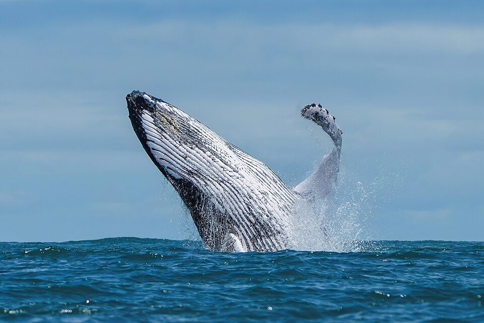

Arrecifes y vida marina
Los arrecifes de coral, las praderas de posidonia y los gigantes del mar: la vida que llena los océanos y los peligros que la amenazan.


Los océanos albergan una enorme parte de la vida del planeta, desde el plancton microscópico hasta el animal más grande que ha existido jamás. Y dentro del mar hay ecosistemas tan ricos como las selvas tropicales.
Arrecifes de coral, las selvas del mar
Los corales parecen piedras o plantas, pero son animales: colonias de diminutos pólipos emparentados con las medusas que fabrican un esqueleto de caliza. Dentro de sus tejidos viven algas microscópicas que les dan color y alimento a cambio de refugio.
Los arrecifes ocupan menos del 1 % del fondo marino, pero albergan alrededor de una cuarta parte de todas las especies marinas. La Gran Barrera de Coral, frente a Australia, se extiende unos 2.300 km: es la mayor estructura construida por seres vivos y se distingue desde el espacio.
El blanqueamiento
Cuando el agua se calienta demasiado durante semanas, los corales expulsan las algas que viven en ellos y se quedan blancos. Si el calor no cede, mueren. Entre 2023 y 2025 se produjo el mayor blanqueamiento registrado, que afectó a más del 80 % de los arrecifes del mundo. Los científicos advierten de que, con 2 °C de calentamiento, la gran mayoría de los arrecifes tropicales podría desaparecer.
La posidonia del Mediterráneo
La Posidonia oceanica no es un alga sino una planta con flores que solo vive en el Mediterráneo. Forma praderas submarinas que oxigenan el agua, la mantienen transparente, protegen las playas de la erosión y sirven de guardería a cientos de especies. Las hojas secas que llegan a la orilla no son suciedad: protegen la arena de los temporales.
Entre Ibiza y Formentera hay una pradera de posidonia que, según un estudio de 2006, podría ser un único organismo de hasta 100.000 años y unos 8 km de longitud, quizá el ser vivo más antiguo del planeta. Forma parte del Patrimonio de la Humanidad. Las anclas de los barcos son una de sus grandes amenazas.
Los gigantes del océano


- La ballena azul es el animal más grande que ha existido: hasta 30 metros y unas 190 toneladas. Su corazón pesa como un coche pequeño y su llamada se oye a cientos de kilómetros. Se alimenta casi solo de krill, unos crustáceos de pocos centímetros.
- Las ballenas jorobadas cantan canciones que pueden durar horas y que se van transformando y extendiendo de una población a otra, como canciones de moda.
- El tiburón ballena, el pez más grande, de hasta 18 metros, es inofensivo: se alimenta de plancton.
- En el estrecho de Gibraltar viven grupos de orcas que, desde 2020, interactúan con veleros y a veces les rompen el timón; los científicos aún estudian por qué.
El plancton, la base de todo
El plancton son los seres, casi siempre diminutos, que flotan a la deriva. El fitoplancton hace la fotosíntesis y produce la mitad del oxígeno de la Tierra; el zooplancton se lo come y alimenta a peces, aves y ballenas. Sin él, la vida marina se derrumbaría.
Amenazas
La pesca excesiva, la contaminación por plásticos, el calentamiento y la acidificación del agua amenazan la vida marina. Las reservas marinas, donde se limita la pesca, demuestran que el mar se recupera si se le deja: en las islas Medes (Girona) o Cabrera (Baleares) los meros y las doradas vuelven a ser abundantes.